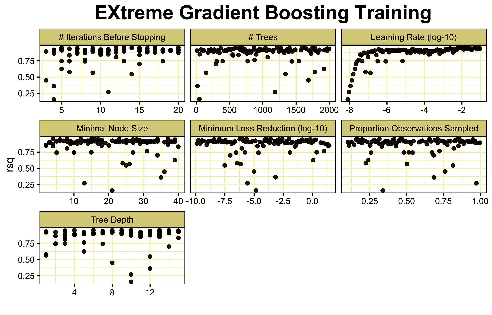

Marcell Granat
Big Data & Visualisation
LinkedIn
GitHub
CV
Categories
All
(21)
Digitalisation
(1)
Economania
(6)
Inflation
(2)
MCA
(2)
ML
(4)
NLP
(4)
Package
(2)
Used cars
(2)
ai
(1)
finance
(2)
history
(1)
publication
(3)
A Compass to Understanding the Hungarian Economy of the 19th–20th Centuries
publication
history
ai
My slides for the EABH 2025 conference
Marcell Granát
Jun 12, 2025
Central bank communication and quantitative text mining tools
Economania
NLP
The communication of central banks often have at least as strong an impact on financial markets as their decisions themselves.
Sep 27, 2023
The Russo-Ukrainian Crisis: Did Financial Markets See it Coming?
publication
finance
Our recent article was published at Finance Research Letters.
Marcell Granát, Kristóf Lehmann, Olivér Nagy, Gábor Neszveda
Aug 30, 2023
The Russo-Ukrainian Crisis: Did Financial Markets See it Coming?
publication
finance
Our recent article was published at Finance Research Letters.
Marcell Granát, Kristóf Lehmann, Olivér Nagy, Gábor Neszveda
Aug 30, 2023
Data and Cultures
ML
Economania
Hal R. Varian, the Chief Economist of Google stated back in 2009 that “the sexy job in the next 10 years will be statisticians.”
Jul 3, 2023
QuantChallenge II
ML
Bálint Mazzag and I participated in the QuantChallenge organized by Morgan Stanley, where we competed against 120 teams. Our hard work and determination paid off as we…
Apr 22, 2023
QuantChallenge I
ML
Bálint Mazzag and I participated in the QuantChallenge organized by Morgan Stanley, where we competed against 120 teams. Our hard work and determination paid off as we…
Apr 22, 2023
From John von Neumann to the ChatGPT: the rise, shine and shine of computer science
Economania
NLP
Neumann’s work was indispensable for the development of computer technology and its current level. An example of this is the ChatGPT, what does unbeatable in what it’s…
Mar 9, 2023
Web scraping with Shiny - automate your weekly food order
Simple, but useful application of static web scraping in a shiny web application to find your favorites in the menu.
Mar 6, 2023
ggProfessional
Package
This package is helpful for those who regularly use the {ggplot2} package to perform their daily institutional tasks.
Feb 21, 2023
Currr
Package
I’ve recently developed a new R package called `currr` (checkpoints & purrr). It manages time-consuming iterations, parallel computing and multitasking.
Feb 14, 2023
Application of NLP to reduce the unemployment
NLP
My friend Bálint and I participated in and won the 2022
Global Data Science Competition
organized by Whiteshield.
Jan 27, 2023
Digitalisation and business performance - focusing on Hungarian manufacturing firms
Digitalisation
MCA
Our recent article in the
Economic Review
investigates the relationship between ICT usage and the profitability of Hungarian manufacturing firms.
Jan 15, 2023
Rising prices, rising returns: how does inflation affect stock returns?
Economania
Inflation
We have to consider several factors when making investment decisions, but one thing for sure: how will inflation change?
Jan 6, 2023
Media Attention to Environmental Issues and ESG Investing
Our recent article in the
Financial and Economic Review
investigates the relationship between the future yield of ESG investment and the news in the media.
Dec 22, 2022

Data Analysis in Practice
Used cars
ML
MCA
I had the honor of being invited to present one our current research at the “Data Analysis in Practice” series.
Dec 15, 2022
How long does it take to sell a used car?
Used cars
Buying a car is a major item in the household consumption basket, so participants in this market make their decisions based on carefully considered arguments. We build a…
Oct 29, 2022
Quantify the Economania Blog
Economania
NLP
TF-IDF to analyse the Economania blog.
Sep 27, 2022
Can we measure inflation just with our laptop?
Economania
Inflation
Between 2008 and 2019, the proportion of regular online shoppers doubled in the EU, and COVID-19 further increased the frequency of online purchases. The prices available…
Aug 8, 2022
Best Paper Award
An interview was conducted with me and my co-author on the topic of the benefits of publishing together after we won the Best Paper Award at Corvinus University of Budapest.
Mar 18, 2022
STAT WARS
With my friend Bálint, we successfully won the 2021 “STAT WARS”, due to which we were also featured in a morning TV show and in newspapers
Jan 27, 2022
No matching items